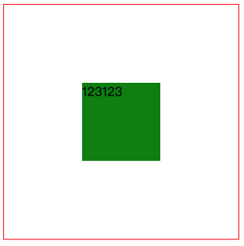

CSS实现水平垂直居中的第10种方式
划重点，这是一道面试必考题，很多面试官都喜欢问这个问题，我就被问过好几次了

要实现上图的效果看似很简单，实则暗藏玄机，本文总结了一下CSS实现水平垂直居中的方式大概有下面这些，本文将逐一介绍一下，我将本文整理成了一个github仓库，欢迎大家star
仅居中元素定宽高适用
- absolute + 负margin
- absolute + margin auto
- absolute + calc
居中元素不定宽高
- absolute + transform
- lineheight
- writing-mode
- table
- css-table
- flex
- grid
absolute + 负margin
为了实现上面的效果先来做些准备工作，假设HTML代码如下，总共两个元素，父元素和子元素
1 | <div class="wp"> |
wp是父元素的类名，box是子元素的类名，因为有定宽和不定宽的区别，size用来表示指定宽度，下面是所有效果都要用到的公共代码，主要是设置颜色和宽高
注意：后面不在重复这段公共代码，只会给出相应提示
1 | /* 公共代码 */ |
绝对定位的百分比是相对于父元素的宽高，通过这个特性可以让子元素的居中显示，但绝对定位是基于子元素的左上角，期望的效果是子元素的中心居中显示
为了修正这个问题，可以借助外边距的负值，负的外边距可以让元素向相反方向定位，通过指定子元素的外边距为子元素宽度一半的负值，就可以让子元素居中了，css代码如下
1 | /* 此处引用上面的公共代码 */ |
这是我比较常用的方式，这种方式比较好理解，兼容性也很好，缺点是需要知道子元素的宽高
absolute + margin auto
这种方式也要求居中元素的宽高必须固定，HTML代码如下
1 | <div class="wp"> |
这种方式通过设置各个方向的距离都是0，此时再讲margin设为auto，就可以在各个方向上居中了
1 | /* 此处引用上面的公共代码 */ |
这种方法兼容性也很好，缺点是需要知道子元素的宽高
absolute + calc
这种方式也要求居中元素的宽高必须固定，所以我们为box增加size类，HTML代码如下
1 | <div class="wp"> |
感谢css3带来了计算属性，既然top的百分比是基于元素的左上角，那么在减去宽度的一半就好了，代码如下
1 | /* 此处引用上面的公共代码 */ |
这种方法兼容性依赖calc的兼容性，缺点是需要知道子元素的宽高
absolute + transform
还是绝对定位，但这个方法不需要子元素固定宽高，所以不再需要size类了，HTML代码如下
1 | <div class="wp"> |
修复绝对定位的问题，还可以使用css3新增的transform，transform的translate属性也可以设置百分比，其是相对于自身的宽和高，所以可以讲translate设置为-50%，就可以做到居中了，代码如下
1 | /* 此处引用上面的公共代码 */ |
这种方法兼容性依赖translate2d的兼容性
lineheight
利用行内元素居中属性也可以做到水平垂直居中，HTML代码如下
1 | <div class="wp"> |
把box设置为行内元素，通过text-align就可以做到水平居中，但很多同学可能不知道通过通过vertical-align也可以在垂直方向做到居中，代码如下
1 | /* 此处引用上面的公共代码 */ |
这种方法需要在子元素中将文字显示重置为想要的效果
writing-mode
很多同学一定和我一样不知道writing-mode属性，感谢@张鑫旭老师的反馈，简单来说writing-mode可以改变文字的显示方向，比如可以通过writing-mode让文字的显示变为垂直方向
1 | <div class="div1">水平方向</div> |
1 | .div2 { |
显示效果如下：
1 | 水平方向 |
更神奇的是所有水平方向上的css属性，都会变为垂直方向上的属性，比如text-align，通过writing-mode和text-align就可以做到水平和垂直方向的居中了，只不过要稍微麻烦一点
1 | <div class="wp"> |
1 | /* 此处引用上面的公共代码 */ |
这种方法实现起来和理解起来都稍微有些复杂
table
曾经table被用来做页面布局，现在没人这么做了，但table也能够实现水平垂直居中，但是会增加很多冗余代码
1 | <table> |
tabel单元格中的内容天然就是垂直居中的，只要添加一个水平居中属性就好了
1 | .wp { |
这种方法就是代码太冗余，而且也不是table的正确用法
css-table
css新增的table属性，可以让我们把普通元素，变为table元素的现实效果，通过这个特性也可以实现水平垂直居中
1 | <div class="wp"> |
下面通过css属性，可以让div显示的和table一样
1 | .wp { |
这种方法和table一样的原理，但却没有那么多冗余代码，兼容性也还不错
flex
flex作为现代的布局方案，颠覆了过去的经验，只需几行代码就可以优雅的做到水平垂直居中
1 | <div class="wp"> |
1 | .wp { |
目前在移动端已经完全可以使用flex了，PC端需要看自己业务的兼容性情况
grid
css新出的网格布局，由于兼容性不太好，一直没太关注，通过grid也可以实现水平垂直居中
1 | <div class="wp"> |
1 | .wp { |
代码量也很少，但兼容性不如flex，不推荐使用
总结
下面对比下各个方式的优缺点，肯定又双叒叕该有同学说回字的写法了，简单总结下
- PC端有兼容性要求，宽高固定，推荐absolute + 负margin
- PC端有兼容要求，宽高不固定，推荐css-table
- PC端无兼容性要求，推荐flex
- 移动端推荐使用flex